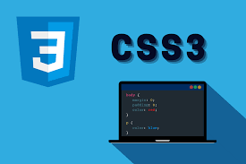
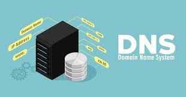
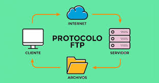

Conceptos Básicos
Conceptos Basicos
Tablas y Listas
Imagenes y Videos
Sitio Web
Un sitio web es un conjunto de páginas web que están interconectadas y que se pueden acceder a través de internet. Los sitios web pueden contener imágenes, videos, textos, archivos de audio y enlaces a otros sitios web. Los sitios web pueden ser creados por una persona u organización y pueden tener diferentes propósitos, como: Mostrar información sobre una empresa, institución o persona Vender productos o servicios Compartir contenido de valor Ofrecer atención al cliente Realizar trámites en línea Los sitios web se organizan jerárquicamente y se pueden acceder a ellos a través de una dirección URL
¿Qué es una página web?
Una página web, página electrónica o página digital es un documento de carácter multimediático, es decir, capaz de incluir audio, video, texto y sus combinaciones, que presenta su información de manera organizada y se encuentra alojado en internet. Se trata del formato básico de contenidos en la World Wide Web (WWW).
Como otros documentos electrónicos, las páginas web se construyen usando algún lenguaje de programación, como HTML o XHTML. Gracias a ello, no solo muestran la información de manera organizada y dinámica en un navegador web, sino que permiten al usuario saltar hacia otros contenidos en línea a través de hipervínculos o links, así como descargar datos directamente a su computadora.
¿Qué es un Hipervínculo?
Un hipervínculo, es una conexión directa entre dos espacios virtuales en el mundo digital. Es la forma más rápida que existe en internet de llegar de un punto a otro, con este viajamos a la velocidad de 1 clic.
Esta conexión es creada a través de tags, que le asignan a dos elementos atributos unidireccionales: punto de origen o ancla: es el punto de partida, en los textos generalmente están en azul y subrayados; punto de destino: es aquel que etiquetamos como llegada, El lugar al que queremos dirigir al navegante. La conexión inmediata del hipervínculo, es lo que hace que su uso sea tan frecuente.
¿Qué es URL?
Una URL es una cadena de texto que indica la ubicación de un recurso en internet. En español, se conoce como Localizador Uniforme de Recursos. Las URL se utilizan para acceder a páginas web, imágenes, archivos de audio o video, entre otros contenidos digitales
¿Qué es HTML?
HTML (HyperText Markup Language) es un lenguaje de marcado que se utiliza para crear y estructurar páginas web. Se compone de una serie de elementos, llamados etiquetas, que le indican al navegador cómo mostrar el contenido
El HTML es el componente básico de la web y se utiliza para crear blogs, redes sociales, ecommerces y otros tipos de páginas web. Características del HTML Es un lenguaje descriptivo que especifica la estructura de las páginas web. Se utiliza para definir el significado y la estructura del contenido web. Se compone de elementos que permiten estructurar y dar significado al documento.
¿Qué es CSS?
CSS (Cascading Style Sheets) es un lenguaje de programación que se utiliza para dar estilo a las páginas web. CSS permite controlar cómo se muestran los elementos de una página, como su color, fuente, posición, animaciones y efectos visuales.
Características de CSS: Separa el contenido de la presentación de la página web Permite personalizar la apariencia de una página sin modificar su contenido Ahorra tiempo y reduce errores Permite compartir la misma hoja de estilo entre varias páginas Facilita el mantenimiento de las páginas Aumenta la velocidad de carga de las páginas Para aplicar CSS a una página web, se pueden utilizar hojas de estilos externas, internas o en línea.

¿Qué es JS (JavaScript)?
JavaScript es un lenguaje de programación que se utiliza para crear páginas web interactivas. Permite añadir funciones que mejoran la experiencia del usuario, como animaciones, mapas, y eventos que ocurren al interactuar con el sitio.
¿Qué es DNS?
DNS son las siglas en inglés de Domain Name System, que en español significa "Sistema de Nombres de Dominio". Es un conjunto de protocolos y servicios que permite a los usuarios acceder a sitios web usando nombres en lugar de direcciones IP. El DNS funciona como una guía telefónica de Internet. Su función principal es traducir los nombres de dominio, como "www.amazon.com", a direcciones IP, como "192.0.2.44".

¿Qué es IP?
Una dirección IP es una dirección única que identifica a un dispositivo en Internet o en una red local. IP significa “protocolo de Internet”, que es el conjunto de reglas que rigen el formato de los datos enviados a través de Internet o la red local.
¿Qué es Dominio Web?
Un nombre de dominio es el equivalente a la dirección física de tu sitio web. Ayuda a los usuarios a encontrar fácilmente tu sitio en lugar de utilizar su dirección de protocolo de Internet (IP). Los nombres de dominio, formados por un nombre y una extensión, son una parte fundamental de la infraestructura de Internet.
¿Qué es Cliente - Servidor?
La red cliente-servidor es una red de comunicaciones en la cual los clientes están conectados a un servidor, en el que se centralizan los diversos recursos y aplicaciones con que se cuenta; y que los pone a disposición de los clientes cada vez que estos son solicitados.
¿Qué es FTP?
FTP (Protocolo de Transferencia de Archivos) es un protocolo de red que permite intercambiar archivos entre equipos conectados a una red. El FTP funciona abriendo dos conexiones entre los equipos que se comunican: una para los comandos y respuestas, y otra para la transferencia de datos. El FTP es un protocolo simple y rápido que permite transferir archivos sin intermediarios. Sin embargo, los datos se almacenan sin cifrado, por lo que pueden ser interceptados por hackers.

¿Qué es HTTP?
HTTP (Hypertext Transfer Protocol) es un protocolo de comunicación que permite la transferencia de información entre los dispositivos conectados a la red. Es la base de la World Wide Web y se utiliza para cargar páginas web. El HTTP funciona como un lenguaje de "solicitud-respuesta". Cuando un navegador envía una solicitud HTTP a un servidor web, este responde con una respuesta HTTP.
¿Qué es HTTPS?
HTTPS (Protocolo de Transferencia de Hipertexto Seguro) es una versión segura del protocolo HTTP (Protocolo de Transferencia de Hipertexto). HTTPS se utiliza para proteger la navegación web, ya que encripta los datos que se transfieren entre el navegador y el sitio web. Cómo funciona El navegador y el servidor establecen una conexión segura y cifrada. El cifrado se realiza mediante SSL (Secure Sockets Layer) o TLS. El navegador muestra un candado en la barra de direcciones para indicar que la página es segura. Para qué sirve Es el estándar para sitios web que manejan información personal, datos bancarios o credenciales de inicio de sesión. Los buscadores posicionan mejor los sitios web HTTPS, ya que son más seguros para los usuarios.
¿Qué es FrontEnd?
El término frontend, o front-end, se utiliza para referirse a parte del desarrollo web que involucra todo aquello que el usuario ve, es decir todas las partes del desarrollo que sirven para que las aplicaciones se comuniquen con el usuario
¿Qué es BackEnd?
El backend es la parte interna de una aplicación o sitio web que no es visible para los usuarios, pero que es fundamental para su funcionamiento. Se encarga de procesar los datos, gestionar las solicitudes y conectarlos con los elementos que el usuario interactúa.
Que es Hosting?
El hosting es un servicio que permite publicar un sitio web o aplicación en internet. También se le conoce como hospedaje o anfitrión. El hosting funciona al alquilar un espacio en un servidor físico, donde se almacenan los archivos y datos necesarios para que el sitio web funcione. El hosting es fundamental para que un sitio web esté disponible para los usuarios. Para que los usuarios puedan acceder al sitio web, es necesario que este esté asociado a un dominio. Al buscar un servicio de hosting, es importante considerar: Que el servidor esté conectado a internet las 24 horas del día Que se realicen copias de seguridad de los archivos Que el servicio tenga garantía de que la información no se perderá Existen diferentes tipos de hosting, que se diferencian por sus características o sistema de funcionamiento
¿Qué es Hosting Privado Virtual (VPS)?
El hosting de servidor privado virtual (VPS) es un servicio que proporciona un espacio de servidor dedicado para alojar aplicaciones o sitios web. Este servicio ofrece más control y personalización que el hosting compartido. El VPS es una máquina virtual que se crea a partir de un servidor físico que se comparte con otros usuarios. Cada VPS tiene su propio sistema operativo y aplicaciones, pero comparte el hardware con otros VPS. Los VPS ofrecen las siguientes ventajas: Mayor control y personalización Acceso root, que permite realizar configuraciones especiales Recursos dedicados, como memoria RAM, almacenamiento y procesador Independencia entre los VPS, lo que garantiza el desempeño de los recursos Los VPS son una buena opción para aplicaciones con tráfico moderado o picos de tráfico, comercio electrónico, servidores de correo electrónico y CRM
¿Qué es Hosting en la nube (Cloud Hosting)?
El hosting en la nube, o cloud hosting, es un servicio que permite alojar sitios web y aplicaciones en servidores virtuales distribuidos en la nube. El hosting en la nube ofrece varias ventajas, como: Escalabilidad: Se puede adaptar a las necesidades del usuario, aumentando o disminuyendo los recursos computacionales. Pago por uso: Se paga por los recursos que se utilizan, en lugar de tarifas planas. Confiabilidad: Los fallos de hardware no causan tiempo de inactividad. Flexibilidad: Se puede ajustar según las necesidades de cada empresa. Al elegir un proveedor de hosting en la nube, se debe considerar la seguridad y el soporte. Algunos proveedores de hosting en la nube son: Google Cloud, AWS
¿Qué es BackEnd?
El World Wide Web Consortium, más conocido como W3C, es una organización internacional que tiene como objetivo crear estándares para la World Wide Web. Fue fundada en 1994 por Tim Berners-Lee, uno de los creadores de la web, y está compuesta por miembros de diversas empresas, organizaciones y gobiernos de todo el mundo.